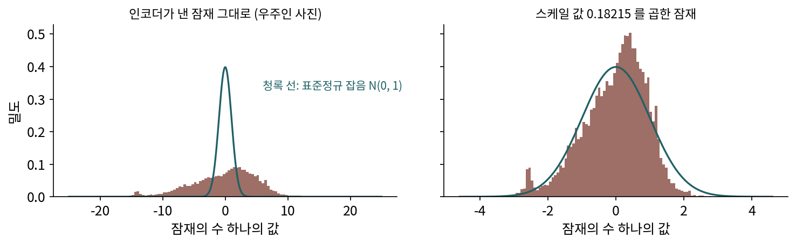

스케일 값: 잠재를 잡음과 같은 크기로 맞춘다
KL 항을 거의 꺼 버린 압축기의 잠재는 크기가 자유롭다. 사진 다섯 장을 Stable Diffusion 1.x 압축기로 줄인 잠재의 수를 모두 모으면 평균이 −1.25, 표준편차가 5.20이다. 잡음 일정은 그렇지 않았다. 분산 보존 일정은 αt² + σt² = 1로 맞춰져 있어서, 데이터의 표준편차가 1 근처일 때 섞인 그림의 크기가 처음부터 끝까지 1로 지켜진다. 그림의 밝기를 −1 ~ 1로 두고 짠 시간표다. 표준편차가 5.20인 잠재를 그 시간표에 그대로 넣으면 어떻게 될까?

같은 일정, 다른 그림
Stable Diffusion 1.x 의 잡음 일정(1000걸음, ComfyUI 기본값)에서 걸음마다 섞인 그림의 분산 가운데 신호가 차지하는 몫을 계산해 보자. 데이터의 표준편차가 1이면 신호와 잡음의 분산이 같아지는 것은 354걸음째다. 표준편차가 5.49인 데이터(Stable Diffusion 이 학습 데이터로 어림한 잠재의 표준편차. 아래에서 다시 나온다)를 넣으면 816걸음째다. 500걸음째에서 신호의 몫은 27.6% 대 92.0%이고, 표준편차 5.49인 데이터의 500걸음째는 표준편차 1인 데이터의 78걸음째와 몫이 같다. 1000걸음의 대부분 동안 그림이 거의 그대로 보이는 셈이다.
잡음 섞인 그림을 되돌리는 쪽에서 보면 문제가 드러난다. 그림의 큰 모양을 정하는 일은 잡음이 신호를 덮는 걸음들에서 일어난다. 표준편차가 5.49면 그런 걸음이 끝의 200걸음 남짓뿐이고, 나머지 800걸음은 이미 거의 보이는 그림의 결을 다듬는 데 쓰인다. 잠재 디퓨전 논문의 부록도 같은 것을 보였다. 크기를 맞추지 않은 잠재에서는 신호 대 잡음비가 너무 높아, 생성의 아주 이른 걸음에서 그림의 뜻이 정해져 버린다고 했다.
처방은 단순하다. 잠재에 수 하나를 곱해 표준편차를 1 근처로 맞춘 뒤 디퓨전에 넘기고, 생성이 끝나면 그 수로 나눠 디코더에 넣는다.
이 수를 스케일 값 (잠재에 곱해 표준편차를 1 근처로 맞추는 수 / scale factor)이라 한다. Stable Diffusion 1.x 의 스케일 값은 0.18215이고, 1/0.18215 = 5.49다. 우리가 사진 다섯 장으로 잰 표준편차 5.20과 가깝다. 스케일 값을 곱한 다섯 장의 잠재는 표준편차가 0.946이다.
ML에서: 모델마다 다른 맞춤
ComfyUI 는 모델마다 잠재 형식을 하나씩 두고, 잠재가 디퓨전 신경망으로 들어갈 때 맞춤(process_in)을, 나올 때 되돌리기(process_out)를 한다(comfy/latent_formats.py, comfy/model_base.py). 맞추는 법은 모델마다 다르다.
| 모델 | 압축 배율 · 채널 | 디퓨전에 넘기기 전에 하는 일 |
|---|---|---|
| Stable Diffusion 1.x · 2.x | 8 · 4 | 0.18215 를 곱한다 |
| SDXL | 8 · 4 | 0.13025 를 곱한다 |
| Stable Diffusion 3 | 8 · 16 | 0.0609 를 빼고 1.5305 를 곱한다 |
| FLUX.1 · Z-Image | 8 · 16 | 0.1159 를 빼고 0.3611 을 곱한다 |
| Qwen-Image · Krea 2 · Anima | 8 · 16 | 채널마다 정해 둔 평균을 빼고 채널마다의 표준편차로 나눈다(16쌍) |
| FLUX.2 | 16 · 128 | 압축기가 2 × 2칸을 묶은 뒤 채널마다 저장해 둔 평균과 분산으로 정규화해 내놓는다. 바깥에서는 아무것도 하지 않는다 |
빼는 수가 붙은 모델은 평균까지 0 근처로 옮기고, Qwen-Image 계열과 FLUX.2 는 채널마다 따로 맞춘다.
문제 7. 5점 만점 과목의 채점 실수
두 과목의 시험 점수에 채점 실수가 섞인다. 실수는 과목과 상관없이 평균 0, 표준편차 1점이다. 과목 A 는 100점 만점이고 학생들 점수의 표준편차가 15점, 과목 B 는 5점 만점이고 표준편차가 1점이다. (가) 각 과목에서 받은 점수의 분산 가운데 실력이 차지하는 몫은? (나) 두 과목에서 실수의 영향을 똑같이 만들려면 무엇을 바꿔야 하는가?

(가)는 실수가 똑같이 1점이니까 두 과목이 똑같이 영향을 받죠.

1점 틀리는 게 100점 만점 과목과 5점 만점 과목에서 같은 일인가요? 분산으로 계산해 봐요.

A 는 15² ÷ (15² + 1²) = 225 ÷ 226 = 99.6%, B 는 1 ÷ (1 + 1) = 50%예요. B 는 받은 점수의 절반이 실수네요.

(나)는 B 의 점수에 15를 곱해서 A 와 같은 크기로 늘리거나, B 에 섞는 실수를 15분의 1로 줄이면 돼. 실수와 실력의 크기 비율이 같아지게.

잡음 일정은 「실수의 크기」를 미리 정해 둔 시간표예요. 데이터의 크기를 그 시간표에 맞추는 게 스케일 값이고요.

잠재가 표준편차 5.49인 건 A 과목 쪽이네요. 잡음이 섞여도 실력이 너무 잘 보이는.

학점을 4.5 만점과 100점 만점으로 섞어 쓰는 학교에서 「1점 차이」를 같은 무게로 보면 안 되는 거랑 같네요.
문제 8. 마지막 걸음의 그림
Stable Diffusion 1.x 의 잡음 일정에서 마지막 걸음의 αt는 0.0683, σt는 0.9977이다. (가) 잠재의 표준편차가 1일 때와 5.49일 때, 마지막 걸음의 섞인 그림에서 신호의 표준편차와 분산의 몫은? (나) 생성은 표준정규분포 N(0, I)에서 출발한다. 스케일 값을 곱하지 않은 잠재로 학습한 모델에게 이 출발점은 어떤 그림인가? (다) 이 일정의 가장 큰 「신호로 나눈 잡음 크기」 σt/αt는 14.61이다. 데이터의 표준편차로 나누면 각각 얼마인가? (위젯 2에서 표준편차를 바꿔 가며 확인해 보자.)
(가)는 표준편차 1이면 신호가 0.0683, 몫은 0.0683² ÷ (0.0683² + 0.9977²) = 0.47%. 5.49면 신호가 5.49 × 0.0683 = 0.375, 몫은 12.4%야.

12% 면 아직 그림이 꽤 남아 있는 거잖아요. 그래도 거의 잡음이니까 N(0, I)에서 시작해도 별 차이 없지 않아요?
학습 때 모델이 마지막 걸음에서 본 그림들의 표준편차는 얼마였죠? 생성 때 처음 받는 그림은요?
√(0.375² + 0.9977²) = 1.066이요. 생성 때는 정확히 1이고요. 그런데 크기보다 중요한 건, 학습 때는 그 12% 안에 진짜 그림의 큰 모양이 들어 있었다는 거네요. 생성 때 받는 N(0, I)에는 그게 없어요.

모델은 마지막 걸음에서도 「큰 모양은 이미 보인다」고 배웠으니까, 아무 모양도 없는 잡음을 받으면 거기서 큰 모양을 읽어 내려고 할 거야. 없는 걸 읽으니 엉뚱한 모양이 나오겠지.
(다)는요?
14.61 ÷ 1 = 14.61, 14.61 ÷ 5.49 = 2.66이요. 가장 짙은 잡음도 데이터 크기의 2.66배밖에 안 되는 거네요.

분산 폭발로 읽으면 더 잘 보여. 데이터 크기의 2.66배 잡음을 섞으면 그림의 큰 모양은 아직 남아 있어. 이 일정은 데이터 크기의 14.61배까지 가도록 짰는데 그 앞에서 멈춘 셈이야.
그래요. 표준편차 1일 때도 0.47%가 남는다는 것은 이 일정의 다른 문제로 따로 다뤄지지만, 스케일 값을 곱하지 않으면 그 틈이 열 배 넘게 벌어져요.
연습 문제를 늘 첫 줄이 채워진 채로 풀던 학생한테 시험에서 빈 칸을 주는 거랑 같네요.
문제 9. 수 하나로 맞추면
사진 다섯 장의 Stable Diffusion 1.x 잠재를 채널마다 따로 재면 표준편차가 5.74, 5.00, 4.22, 3.06이다. (가) 스케일 값 0.18215 를 곱한 뒤 채널마다의 표준편차는? (나) FLUX.1 잠재는 그대로 재면 평균 −0.453, 표준편차 2.718이고, 0.1159 를 빼고 0.3611 을 곱하면 평균 −0.205, 표준편차 0.982다. 빼는 수는 무슨 일을 하는가? (다) Qwen-Image 계열은 왜 채널마다 따로 맞출까? 따로 맞추면 무엇을 믿어야 하는가?
(가)는 곱하면 1.046, 0.911, 0.769, 0.557이요. 다섯 장 전체로는 0.946이었으니까 대충 1이죠.

넷째 채널은 0.557이야. 전체 평균이 1 근처라도 채널 하나는 절반밖에 안 돼. 그 채널에게는 5점 만점 과목처럼, 잡음이 너무 일찍 신호를 덮어.
수 하나만 곱하는 맞춤이 할 수 없는 일이 무엇인지 말해 볼래요?
채널끼리의 크기 차이는 못 고쳐요. 모든 채널에 같은 수를 곱하니까 5.74 대 3.06의 비율은 그대로 남아요.
(나)는 평균을 0 쪽으로 옮기는 거네요. 표준편차만 맞추면 평균이 −0.453 × 0.3611만큼 한쪽으로 쏠린 채 들어가니까요. 빼고 곱했더니 표준편차가 0.982로 거의 1이 됐어요.
(다)는 채널마다 크기가 다른 걸 아예 채널별로 고치려는 거야. 대신 채널마다 평균과 표준편차를 어떤 그림들로 쟀는지가 중요해져. 그 그림들이 실제로 넣을 그림과 다르면 맞춘 값도 어긋나니까.
그래요. 수를 몇 개로 맞추든, 그 수는 학습 데이터의 잠재에서 잰 것이고, 그 데이터로 학습한 디퓨전 모델은 그 맞춤에 맞춰져 있어요. 그래서 압축기를 바꾸면 디퓨전 모델도 다시 학습해야 해요.
통계 시간에 변수마다 따로 표준화하느냐 전체를 한꺼번에 하느냐에 따라 회귀 결과가 달라지던 거랑 같네요.